- 1.- WampServer 2.5
- 2.- UYCODEKA version 1.1
- 3.- Winzip
- 4.- Filezilla o programa similar
1.- Descargar Wampserver 2.5 que corresponde a nuestro sistema operativo de la siguiente dirección: http://www.wampserver.com/en.
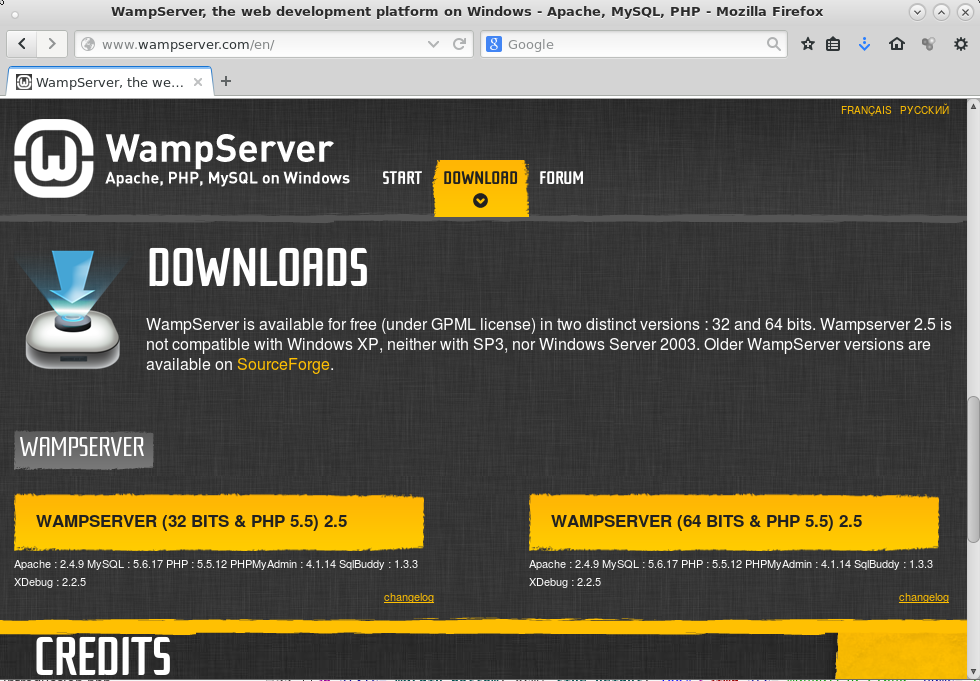
La instalación de Wampserver 2.5 requiere descargar vcredist_x64/86.exe, tal como se muestra en la siguiente imagen. Se debe seleccionar la que corresponde a nuestro sistema operativo,
al hacer clic sobre la opción que corresponda se abrira la siguiente ventana
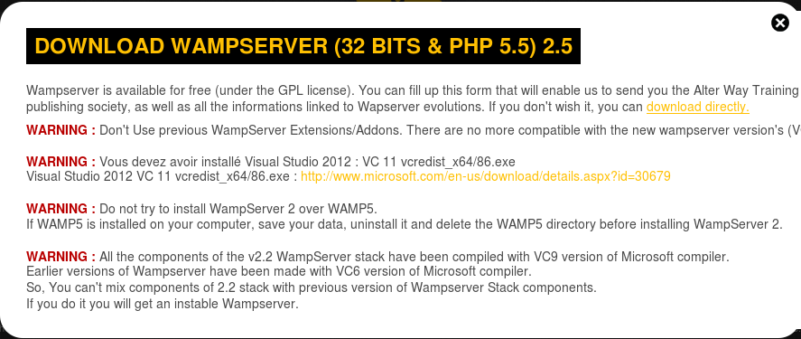
Aquí se nos muestran las opciones para la descarga, donde se muestra también el link para descargar vcredist_x64/86.exe.
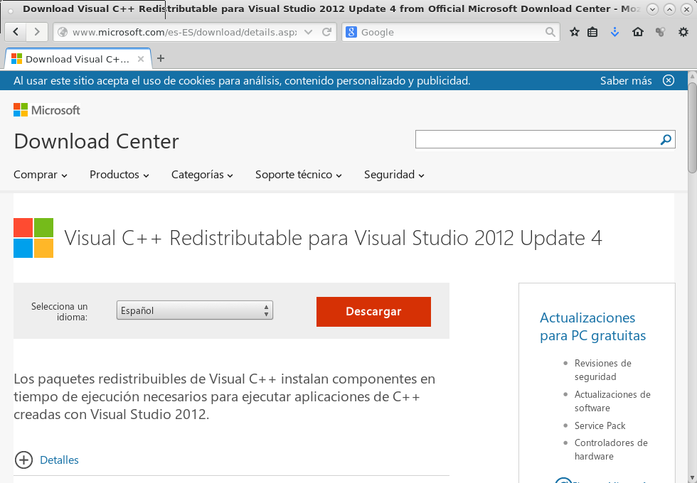
Seleccionamos el idioma que queremos descargar.
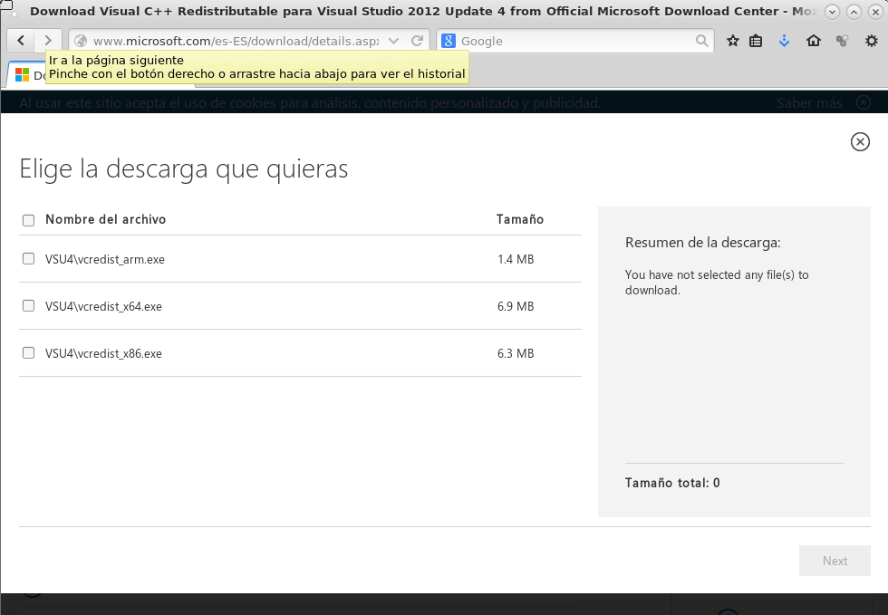
Seleccionamos la versión que corresponde a nuestra arquitectura de sistema operativo y presionamos Next.
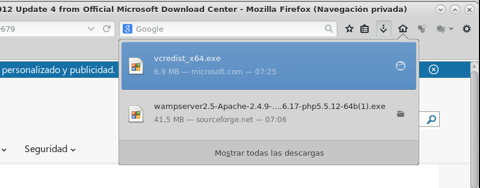
Tenemos descargados ambos programas. Procedemos a la instalación, primero de vcredist_xxx.exe (dependiendo de la versión que hemos bajado)
y luego el wampserver2.5-Apache-2.4.9-...6.17-php5.5.12-64.exe.
2.- Instalación de vcredist_xxx.exe.
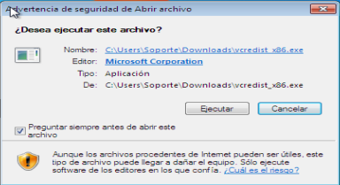
Aceptamos la ejecución del programa y seguimos las opciones en pantalla.
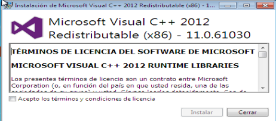
Aceptamos los terminos y condiciones de licencia.
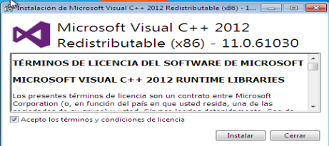
Le damos Instalar.
Finalizamos dando clic en Cerrar.
2.- Instalación de Wampserver.
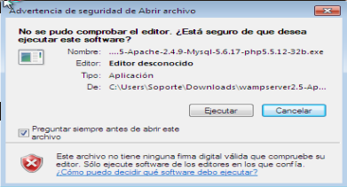
Aceptamos la ejecución del programa y seguimos las opciones en pantalla.
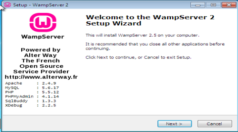
Clic en Next.
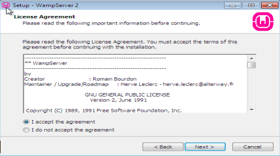
Aceptamos los terminos de licencia.
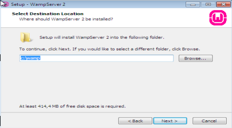
Dejamos la opción por defecto y le hacemos clic en Next.
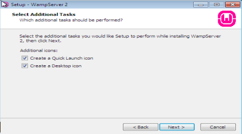
Marcamos ambas opciones y le damos clic en Next.
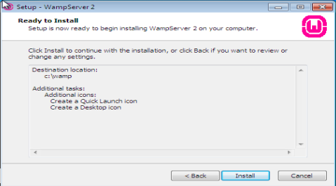
Hacemos clic en la opción Install.
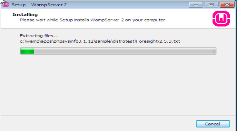
Esperamos que termine la copia de archivos.
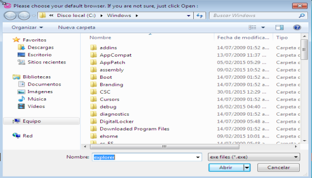
Buscamos donde esta instalado el Firefox.
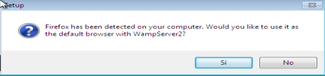
Si tenemos Firefox instalado en el PC como navegador por defecto nos lo muestra.
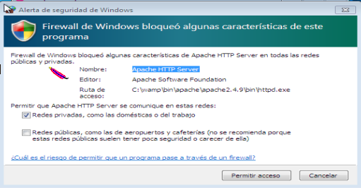
Habilitamos el acceso a la red de nuestro Apache recién instaldo.
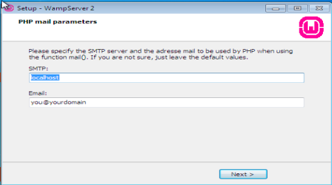
Dejamos los valores por defecto y le damos clic en Next.
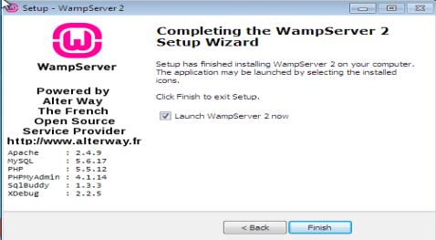
Finalizamos la instalación e iniciamos el WampServer2.
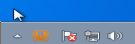
Vemos a la izquierda del reloj el icono de WampServer funcionando.
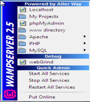
Al hacer clic sobre él, nos muestra esta pantalla donde iniciaremos phpMyAdmin para instalar la base de datos.
3.- Descarga e instalación de la Base de Datos.
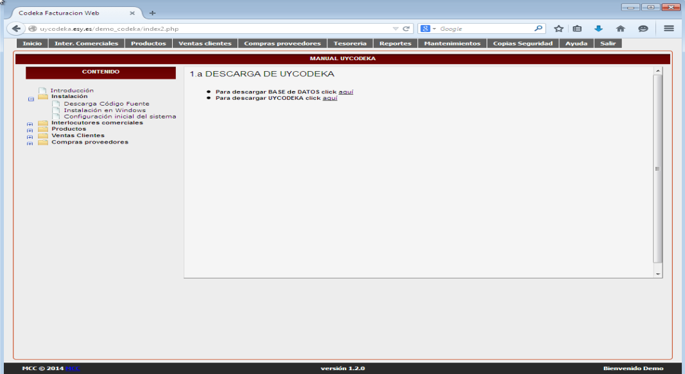
Para descargar la Base de Datos, vamos a Ayuda -> Instalación -> Descarga Código Fuente y descargamos la base de datos.
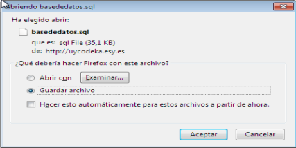
Seleccionamos donde la queremos descargar y hacemos clic en Aceptar.
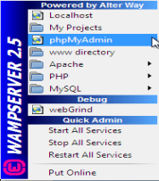
Para importar la base de datos iniciamos el phpMyAdmin desde el menú de WAMPSERVER.
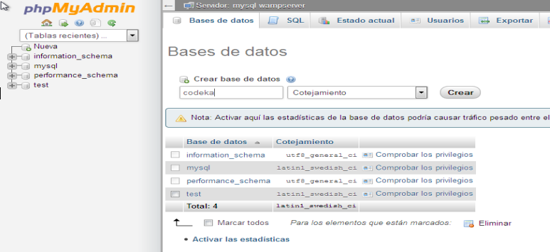
Creamos nuestra base de datos haciendo clic en la opción Nueva a la izquierda en el phpMyAdmin y escribimos el nombre codeka en el campo a la derecha, con las opciones por defecto.
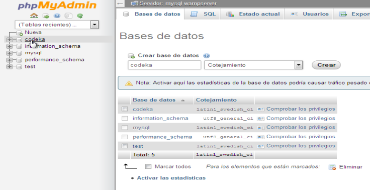
Nos aparece ahora la base de datos creada, falta importar las tablas.
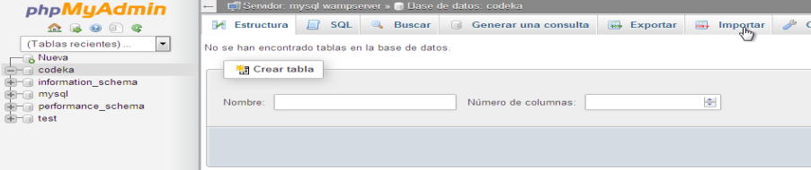
Seleccionamos la base de datos creada y hacemos clic sobre la opción Importar.
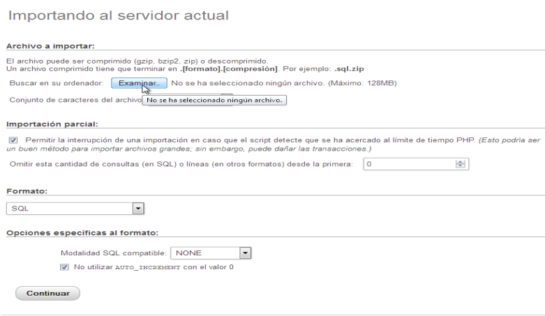
Hacemos clic sobre el botón Examinar.
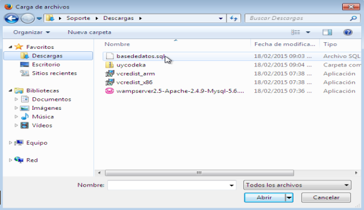
Se nos habre una ventana desde donde podremos seleccionar el archivo de la Base de Datos y luego hacemos clic en Abrir.
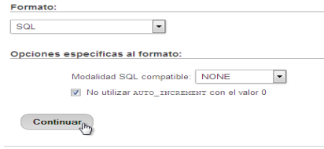
Luego de seleccionado el archivo hacemos clic en el botón Continuar.
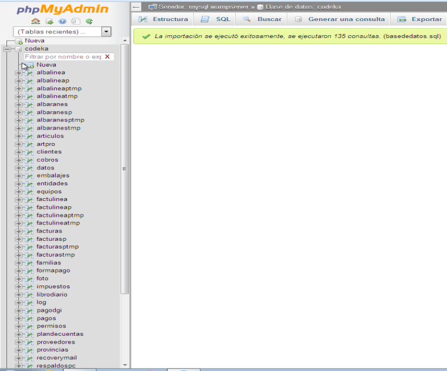
Al finalizar la importaciñon se nos mostrara la lista de tablas importadas.
4.- Descarga e instalación UYCODEKA desde el código fuente.
Para descargar la Base de Datos, vamos a Ayuda -> Instalación -> Descarga Código Fuente y descargamos UYCODEKA.
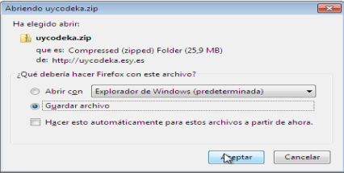
Seleccionamos donde la queremos descargar y hacemos clic en Aceptar.
2.- Conseguimos nuestra versión de CodeKa Mx de la siguiente dirección: http://www.codekamx.com y lo guardamos en nuestro disco duro.
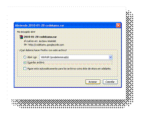
Posteriormente se extrae en la siguiente ubicación C:\wamp\www
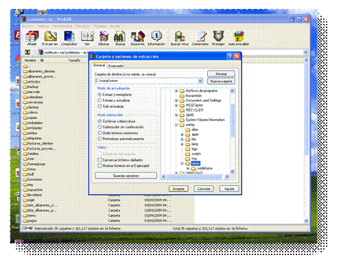
Así debe quedar nuestra carpeta C:\wamp\www\codekamx
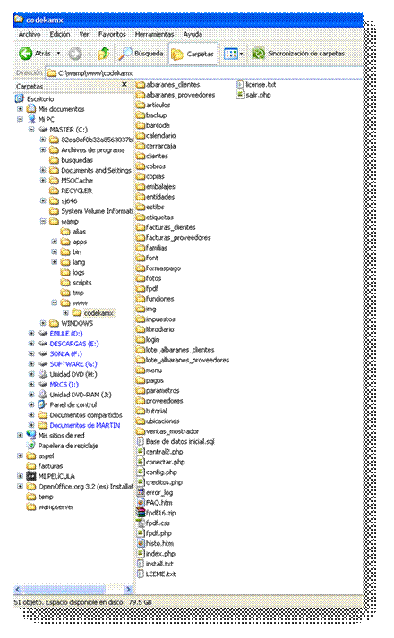
Procedemos a ubicar el wampserver en la barra de tareas y seleccionamos localhost.
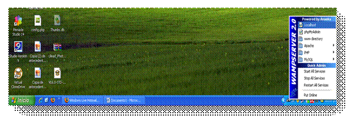
Nos mostrara la siguiente ventana y quiere indicar que nuestro wampserver esta correctamente instalado y con la carpeta de nuestro sistema CodeKa Mx, pero aun nos falta hacer algunos cambios a la configuración para que CodeKa Mx funcione a la perfección
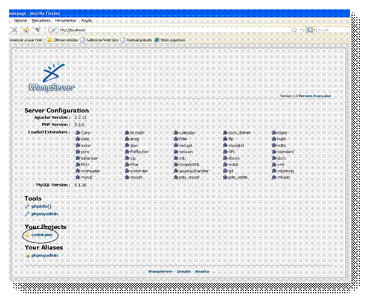
pero no nos alarmemos pues nos van a salir algunos errores y aunque no lo crean esos nos dicen que vamos por el camino correcto
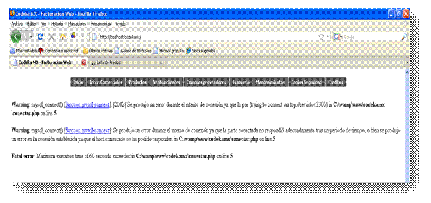
Para solucionar estos problemas tenemos que activar/desactivar las siguientes características en nuestra configuración de php damos clic en el icono de wampserver en la barra de tareas y después seleccionamos php, php settings y dejamos la siguiente configuración:
Característica |
Activar |
Desactivar |
Short_open_tag |
X |
|
Display errors |
|
X |
Log errors |
|
X |
Track erros |
|
x |
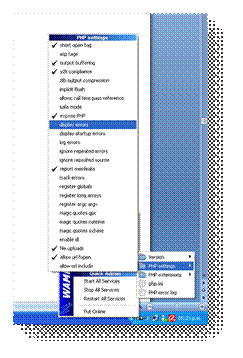
Una vez hecho esto procedemos a configurar el phpadmin tecleamos lo siguiente en mozilla http://localhost/phpmyadmin/ nos mostrara que el archivo de configuración no contiene contraseña.
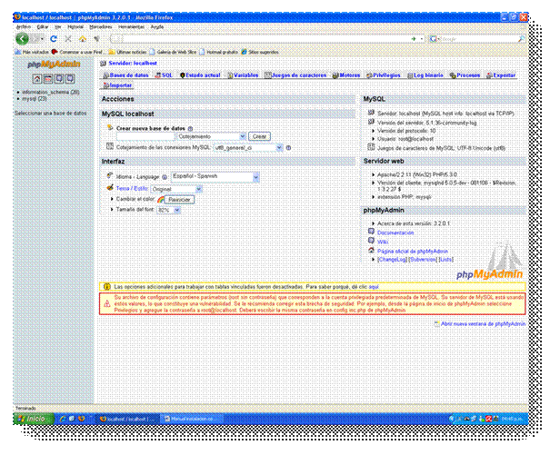
Para asignarle una contraseña vamos a la pestaña privilegios y le asignamos una en editar privilegios
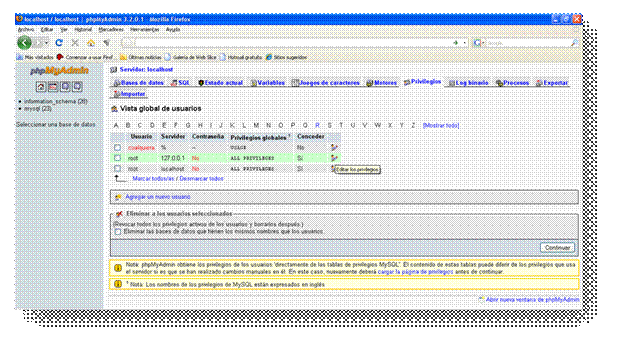
En la opción donde dice cambio de contraseña ponemos una de no menos de 6 caracteres de preferencia números y letras para mayor seguridad y se presiona el botón continuar. En este caso, solo a manera de ejemplo vamos a colocar 123456 después se utilizara esta clave para configurar el acceso a la base de datos.
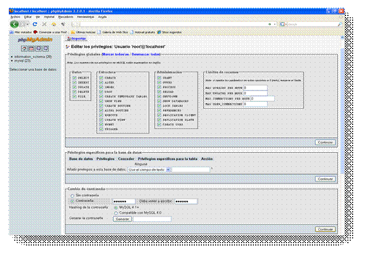
Al hacer esto se nos habrá modificado el acceso a phmypadmin y nos mostrara lo siguiente
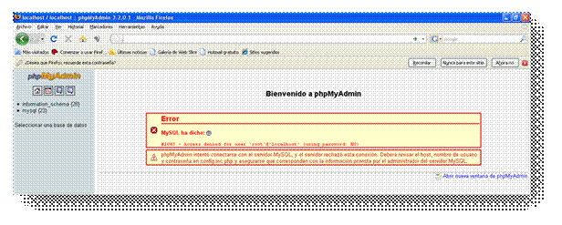

Tenemos que modificar el archivo C:\wamp\apps\phpmyadmin3.2.0.1\config.inc.php en la línea 16 y poner el password introducido en el paso anterior 123456
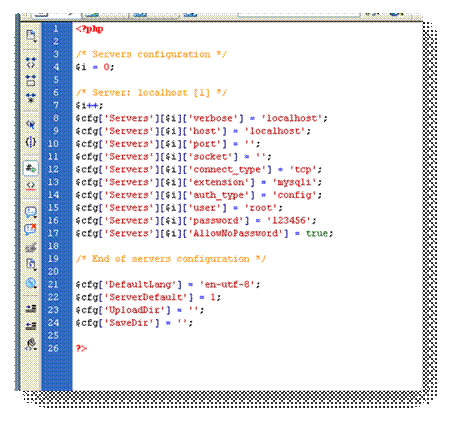
Una vez realizado esto podremos acceder nuevamente a phpmyadmin http://localhost/phpmyadmin/
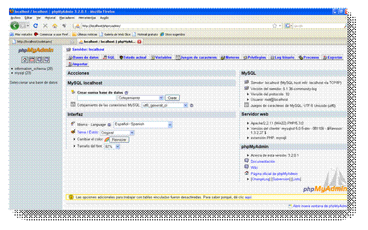
Seleccionamos base de datos y crearemos una que se llame codekamx
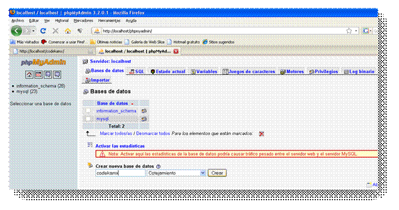
Nos mostrara el siguiente mensaje confirmando que la base de datos se ha creado
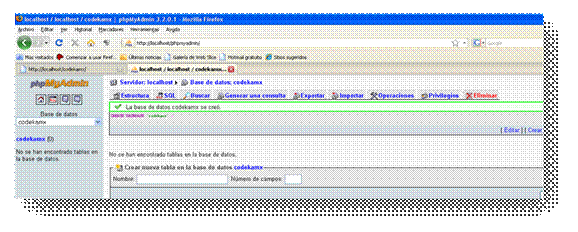
Procedemos a dar clic en el botón importar, luego en examinar y seleccionamos el archivo C:\wamp\www\codekamx\base de datos inicial.sql para su importación, pulsamos continuar
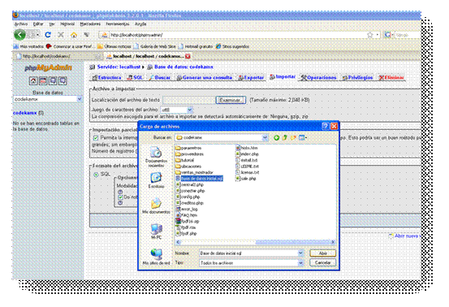
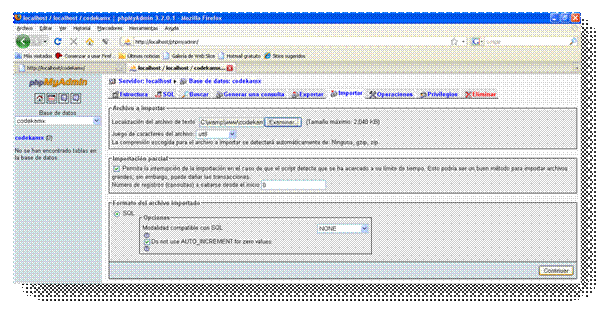
La importación se llevo a cabo y ahora de nuestra base de datos en blando tenemos una con 36 tablas. Nuestra base de datos codekamx(0) paso a codekamx(36) (ver columna izquierda)
Nuevamente pulsamos sobre la solapa privilegios y añadiremos nuestra base de datos al usuario root para que pueda trabajar sobre ella.
Seleccionamos marcar todos/as para que se le asignen esos privilegios al usuario root sobre la base de datos codekamx y pulsamos continuar.
Una vez hecho esto procedemos a modificar los siguientes archivos C:\wamp\www\codekamx\config.php en las líneas 10, 11, 12, 13 C:\wamp\www\codekamx\parametros\parametros.php en las líneas 898 y 898, con lasiguiente informacion :
Campo |
Valor |
Usuario |
root |
Contraseña |
123456 (el que hayas puesto en pasos anteriores.) |
Servidor |
localhost |
Basededatos |
Codekamx |
Así debe quedar C:\wamp\www\codekamx\config.php
Así debe quedar C:\wamp\www\codekamx\parametros\parametros.php
Una vez realizado esto tecleamos http://localhost/codekamx/ y veremos la página principal de codekamx. Lo cual indica que nuestra instalación es satisfactoria.

Algunas capturas de pantalla.